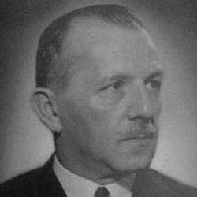

Þükrü Saraçoðlu (1887-1953)

Þükrü Bey, 1887 yýlýnda Ýzmir’in Ödemiþ ilçesinde doðdu. Ýlk eðitimi ve okul hayatýna Ödemiþ’te baþladý. Ýlk ve orta okulu burada okuduktan sonra Ýzmir’e giderek liseye devam etti. Çalýþkan ve zekiliðiyle dikkat çekti. Liseyi birincilikle bitirdi. Yüksek eðitimini Ankara’da devam ettirerek Mülkiye Mektebine devam etti. 1909 yýlýnda Mülkiye Mektebinden mezun oldu ve Ýzmir’e geri döndü.Öðrenimini tamamlayýp Ýzmir’e dönen Þükrü Bey çalýþma hayatýna baþladý. Ýzmir Valiliði bünyesinde maiyet memuru olarak çalýþmaya baþladý. Bu ilk memuriyetinden sonra Ýzmir Sultanisi’nde matematik öðretmenliði yaptý. 1911 yýlýnda ise yine burada bulunan Ýttihat ve Terakki Ticaret Mektebi müdürlüðüne atandý.
Ocak 1914’te devlet bursu kazanan Þükrü Bey, bu bursla Belçika’ya giderek öðrenim hayatýný burada sürdürdü. Bilindiði gibi 1914 yazýnda Birinci Dünya Savaþý patlak verdi. Bunun üzerine yurda döndü. Ancak, kýsa bir süre sonra tekrar yurt dýþýna çýktý. Bu kez Ýsviçre’ye gitti. Burada bulunan Siyasi Ýlimler Akademisinde okumaya baþladý. Dört yýl boyunca burada kaldý. Bu süre sonunda akademiyi bitirerek mezun oldu. Birinci Dünya Savaþýnýn devam ettiði, ülkemizin de dahil olup yüz binlerce þehit verdiði felâketin sürdüðü yýllarda Þükrü Bey yurt dýþýnda kaldý.
Birinci Dünya Savaþý sonunda ittifak devletleri ile birlikte savaþtan yenik ayrýlan Osmanlý Devletine çok aðýr þartlarý ihtiva eden Mondros Mütarekesi imzalatýldý (1918). Mütareke’nin imzalatýldýðý sýrada Cenevre’de bulunan Þükrü Bey, Türk Talebe Cemiyetini kurdu. Bu cemiyet adýna çýkarýlan ve Fransýzca olarak yayýmlanan dergiyi çýkardý. Bir taraftan dergiyi neþrederken, diðer taraftan cemiyetin baþkaný olarak Mondros Mütarekesi’nin þartlarýnýn çok aðýr olduðuna dikkat çekmeye çalýþtý. Avrupa kamuoyunda Osmanlý Devleti’nin haklarýný savunmaya çalýþtý.
Mondros Mütarekesi’nden sonra yurdun dört bir yaný iþgal edilmeye baþlandý. Ýþgal edilen yerlerden birisi de Ýzmir oldu. Birinci Dünya Savaþý sýrasýnda yurt dýþýnda kalmaya devam eden Þükrü Bey, Ýzmir iþgalinden sonra yurda döndü. Ýzmir’e döndükten sonra Kuva-yý Milliye hareketinin organizelerinde ve örgütlenmelerinde bulundu. Ýstanbul’da toplanan son Osmanlý Mebusan Meclisi’ne Ýzmir mebusu olarak seçildiyse de Ýstanbul’a gitmedi ve meclis çalýþmalarýna katýlmadý. Bilindiði gibi, son Osmanlý Meclisi iþgal baskýsý ve büyük tehditler altýnda çalýþmalarýný sürdürmüþ ve Kurtuluþ Savaþý’nýn adeta plan ve programý mahiyetinde olan Misak-ý Milli’yi kabul etmiþti.
Ýstanbul’da toplanan son Osmanlý Meclisi Misak-ý Milli’yi kabul ettikten sonra iþgalcilerin hýþmýna uðradý. Ýstanbul iþgal edildikten sonra yakalanan milletvekilleri sürgüne yollanarak vatanlarýndan uzaklaþtýrýlmýþlardý. Kurtulabilenler ise Anadolu’ya geçerek mücadelelerine devam etmiþlerdi. Bu geliþmelerden sonra Ankara’da Büyük Millet Meclisi toplandý. Ýstanbul’a gitmeyen, Ankara’da açýlan ilk meclise dahil olmayan Þükrü Bey, daha sonraki dönemde, Ankara’ya Ýzmir milletvekili olarak gitti ve 1923 yýlýnda Meclis’e girdi.
Þükrü Bey, Büyük Millet Meclisi’ne girdikten sonra muhtelif görevlerde bulundu. Fethi Okyar tarafýndan kurulan kabinede Maarif Vekili olarak hükümette yer aldý. Ýsmet Ýnönü tarafýndan kurulan üçüncü ve dördüncü kabinelerde Adliye Vekili olarak görev yaptý. 1923-1950 yýllarý arasýnda mecliste bulunan Þükrü Bey, sözü edilen bakanlýklar dýþýnda da muhtelif görevlerde bulundu.
Mehmet Þükrü Bey, on ikinci Refik Saydam hükümetinde ise Hariciye Vekili olarak bulundu. Saydam’ýn 1942 yýlýndaki ölümünden sonra hükümeti kurmakla görevlendirildi. Bunlarýn dýþýnda; Fethi Okyar tarafýndan kurulan kabinede Maarif Vekili (Eðitim Bakaný) olarak yer aldý. 1942 yýlýndaki baþbakanlýðý dönemine kadar kurulan hükümetlerin hemen hemen tamamýnda görev aldý ve bakanlýk yaptý. Böylece CHP’nin sürekli bakanlýklarda bulunan önemli isimlerinden biri oldu. Bu süre zarfýnda; Eðitim, Adalet, Maliye, Dýþiþleri gibi önemli bakanlýklarda bulundu.
Bakanlýklarý sýrasýnda bazý kanunlarýn çýkarýlmasýnda ön ayak oldu. Avukatlýk, hakimlik ve Ýcra Ýflas Kanunlarý onun döneminde hazýrlanýp yürürlüðe sokuldu. Ýmralý Cezaevi’nin kuruluþunu da o saðladý. Cumhuriyet Halk Partisinin önde gelen isimlerinden biri olan Þükrü Bey, 1926 yýlýnda kurulan Yunanlýlarla Mübadele Komisyonuna da baþkanlýk etti. Paris’te, 1932 yýlýnda yapýlan Osmanlý Devleti’nin borçlarýnýn ödenmesinin þartlarýnýn tesbit edilmesi görüþmelerine katýldý.
Þükrü Beyin baþbakanlýðý döneminde ise seçim yasasý çýkarýlarak iki dereceli seçim sistemi uygulandý. Baþbakanlýðý bir süre devam ettirdikten sonra istifa etti. Ýstifasýndan sonra baþbakanlýða Recep Peker getirildi. Kasým 1948’den Demokrat Parti’nin ezici bir çoðunlukla kazandýðý 1950 seçimlerine kadar Türkiye Büyük Millet Meclisi Baþkanlýðý’nda bulundu. 1950 seçimlerinde milletvekili seçilemeyince, 22 Mayýs 1950 tarihinde Meclis Baþkanlýðý da sona erdi ve bundan sonra siyaseti býraktý. 27 Aralýk 1953 yýlýnda Ýstanbul’da öldü.
Soyadý Kanunu’nun çýkmasýndan sonra Saraçoðlu soyadýný alan Þükrü Bey, yoðun siyasî faaliyetlerinin yaný sýra sporla da ilgilendi ve on yedi yýl gibi uzun bir süre Fenerbahçe Spor Kulübü baþkanlýðý da yaptý. Bundan dolayý 22 Temmuz 1998 yýlýnda alýnan bir kararla, Fenerbahçe Stadýna adý verilerek Kadýköy’deki bu stadýn ismi Fenerbahçe Þükrü Saraçoðlu Stadyumu oldu.
Cumhuriyet Halk Partisi’nin uzun yýllar tek baþýna yürüttüðü tek parti iktidarý boyunca büyük sýkýntýlar çeken ve sürgünden sürgüne gönderilen Bediüzzaman, kendisine yapýlan bu haksýzlýklarý eserlerinde dile getirmiþ, bazen parti ismini ve bazen de ilgili þahýslarýn ismini zikrederek kayda geçirmiþtir. Bu vesile ile ismi Risâle-i Nurda zikredilen CHP’li þahsiyetlerden birisi de Þükrü Bey olmuþtur. Bediüzzaman’ýn en çok yakýndýðý durumlardan birisi ve belki de baþta geleni laiklikle ilgili uygulamalar olmuþtur. Din ve vicdan özgürlüðünü saðlamak için getirildiði iddia edilen bu sistemle, dine hücum edenlere sýnýrsýz bir hürriyet ortamý saðlanýrken, Ýslâm’a ve Kur’ân’a yapýlan hücum ve eleþtirilere ses çýkarýlmazken; mütedeyyin insanlarýn büyük sýkýntýlar çekmesi ve baskýlara uðramasý sýradan uygulamalar halini almýþtýr. Bu çeliþki sadece CHP’nin uygulamalarýyla sýnýrlý kalmamýþ, bazý din adamlarý, mahkemeler tarafýndan tayin edilen bilirkiþilerden oluþan bazý bilim adamlarý da bu çeliþkilerden nasibini almýþtýr. Bu durumu; “Ehl-i Vukufun insaflý hocalarýndan üç sualim var” baþlýðý altýnda dile getiren, Bediüzzaman; Kur’ân’a hücum eden dehþetli ejderhalarýn görmezden gelindiðini, sineklerin ýsýrmasýyla uðraþýldýðýný belirttikten sonra “…Dine ve terbiye-i Muhammediyeye (asm) zehir diyen Saraçoðlu’nu býrakýp, hakikat-i Kur’âniyeyi güneþ gibi gösteren ve nev-i beþerin yaralarýna tam tiryak olduðunu ispat eden Siracü’n-Nur ile münakaþa ederek, Nurun o mecmuasýnýn âhirine ilhak edilen bir risâlede zayýf hadislerin tevilleri var diye, o mecmuanýn müsaderesine yardým etmek çýkmaz mý? Bizler siz gibi zatlardan yaralarýmýza merhem sürmek ve ferasetinizle yardým bekler ve cüz’î tenkitlerinizden gücenmeyiz” (Þuâlar, 1994, s. 349-350 ve 384) ifadelerine yer vermiþtir.